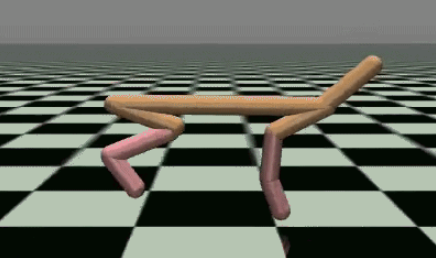
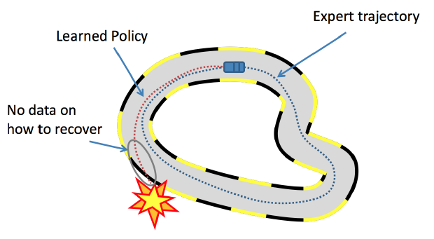
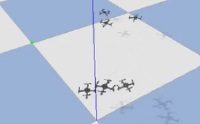
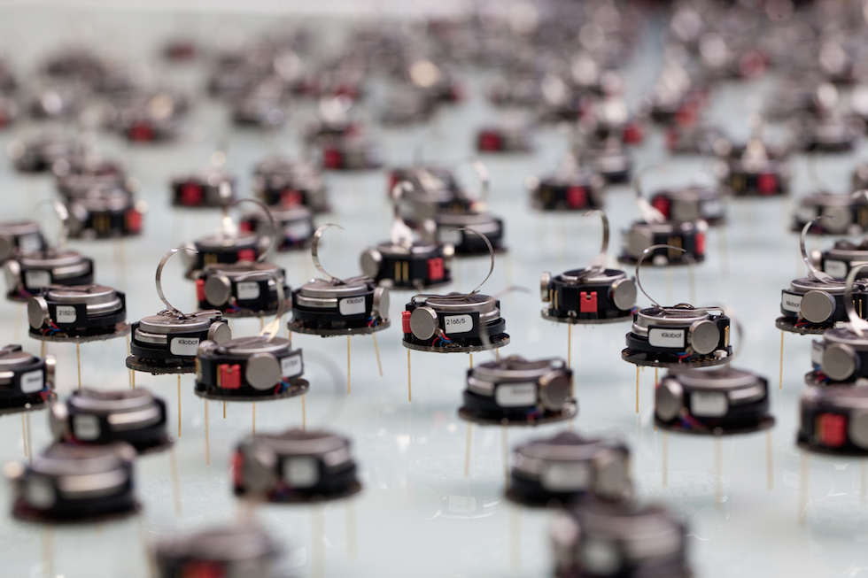
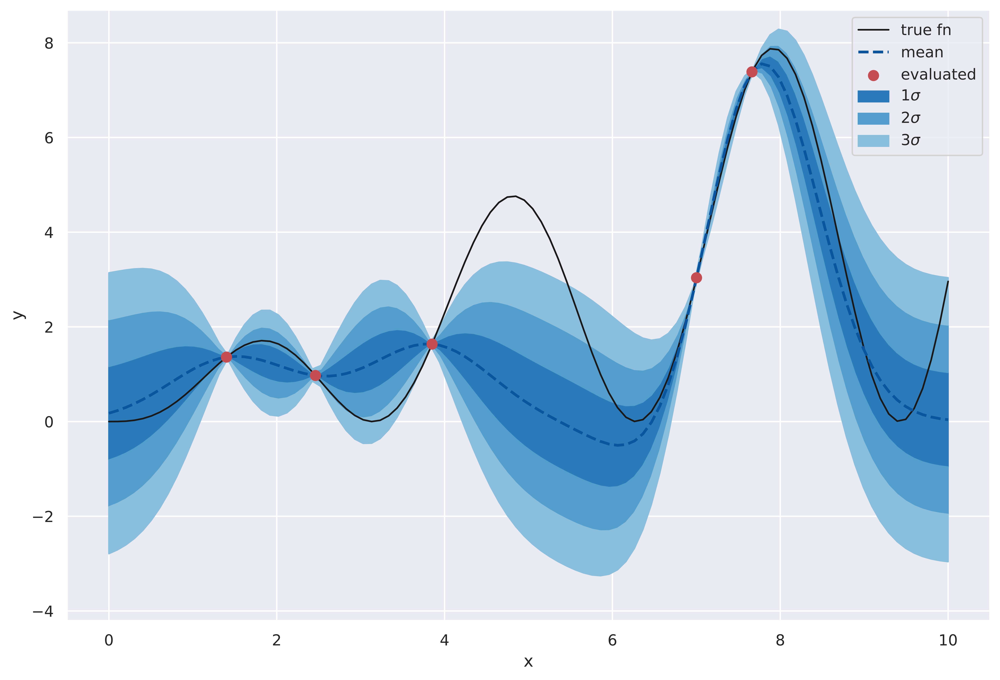
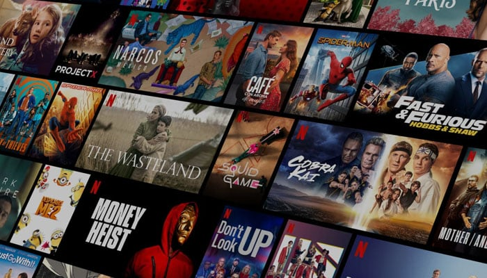
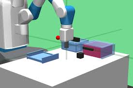
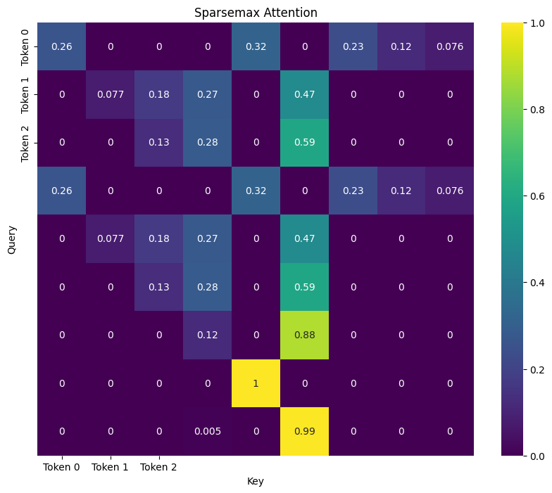
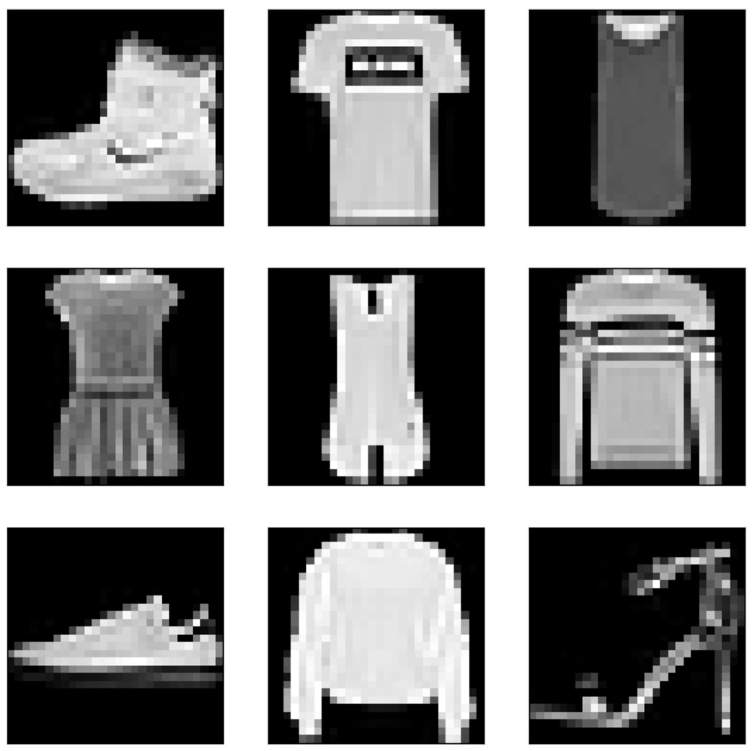
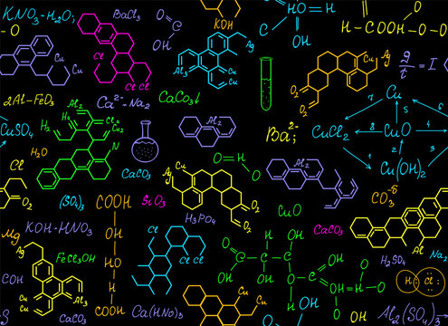

Projects

Open-Ended Reinforcement Learning
Implemented an open-ended reinforcement learning framework that uses LLMs to generate new and learnable tasks from a base environment. Enabled the robot to evolve a diverse family of policies through iterative environment generation, each exhibiting distinct behaviors and skills.
GitHub →
Behaviour Cloning
Implemented a Behaviour cloning startegy for a 7-DOF kinova arm on a 4-wheeled base bearing for control, navigation and obstcale avoidance.
GitHub →
Multi-Agent Drone Control
Implemented a MAPPO-based multi-agent reinforcement learning system for cooperative control of configurable quadrotor swarms in a PyBullet simulation.
GitHub →
Mobile Robot Navigation
An ROS2 project that trains a mobile robot to navigate through obstacles using Soft Actor-Critic reinforcement learning.
GitHub →
Swarm Robotics with GNN-Based MARL
A graph neural network approach to multi-agent reinforcement learning for coordinating swarm robot behaviors and task allocation.
GitHub →Language Conditioned Goal Prediction
Developed a transformer based model for language-conditioned vehicle goal prediction in MetaDrive simulator using LiDAR observations. Incorporated discrete maneuver instructions as conditioning inputs to allow user-specified behavior for an autonomous driver.
GitHub →RL in 5G Networks
Developed a Reinforcement Learning based approach to allocate network slices in 5G and beyond networks, utilizing algorithms like SAC, DQN, Self-Play Ensemble Q-learning etc. Supervised by Prof. Nisha Kandhoul.
Project Report →
Bayesian Optimization for Hyperparameter Tuning
Implemented Bayesian optimization from scratch using Gaussian Process and the Lower Confidence Bound acquisition function for automated hyperparameter tuning. Improved predictive performance by up to 10% across XGBoost, SVM, and KNN.
GitHub →
WatchAI
A platform with an intelligent recommendation system using Deep Reinforcement Learning based contextual bandit algorithm DeepLinUCB to deliver personalized movie suggestions, with real-time updates based on user interactions.
GitHub →
PPOvsSAC
Conducted performance comparison of Proximal Policy Optimization and Soft Actor-Critic algorithms in robotics-based simulations.
GitHub →
SparseMax Transformer
A transformer from scratch that uses a SparseMax Attention mechanism instead of the standard softmax attention.
GitHub →LearnAI
A Streamlit-based application that helps users learn efficiently with artificial intelligence. It provides text summarization, keyword extraction, question generation, and doubt solving functionalities.
GitHub →Background Stylizer
A model that stylizes the background of an image, cropping out the person in it, using Neural Style Transfer and semantic segmentation techniques.
GitHub →
Fashion Generation GANs
Generative adversarial networks for creating innovative fashion designs and patterns.
GitHub →
Solubility Prediction
Graph neural networks for molecular solubility prediction in pharmaceutical research.
GitHub →